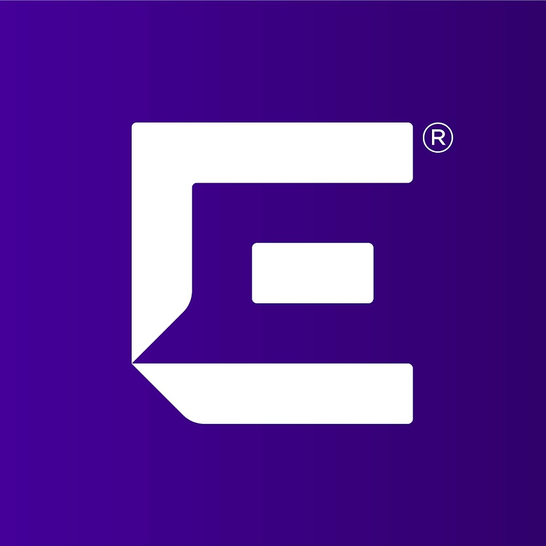

Work Experience
Incoming Software Engineering Intern · Capital One

Software Engineering Intern · Extreme Networks
- Built LangChain-powered AI agent (RAG + MCP) automating SEO audits and improving LLM search ranking by 20%.
- Shipped analytics dashboard (FastAPI · React · Postgres · Docker) cutting reporting time from 3 hours to 5 minutes.
- Led cross-team LLM alignment, boosting page traffic 25% and content performance across three GenAI platforms.
Founding Engineer · Flux
- Built full-stack MVP in React Native + Expo for 100+ beta users, streamlining onboarding and navigation by 20%.
- Integrated ATP Protocol API with TypeScript and local caching (SQLite + PostgreSQL) to speed content retrieval 30%.
- Collaborated in an Agile startup environment, preparing the product for VC and UCLA accelerator funding.
Research Fellow · iCAN Lab @ Purdue University
- Built distributed DL pipelines for action recognition on 10M+ videos, achieving a 2.3× speed-up with CUDA and Apache Spark.
- Developed a C++/Python framework integrating MoViNet for video understanding, cutting network communication by 95%.
- Presented findings at the CRISP Symposium and co-authored a paper submitted to ACM MobiSys.